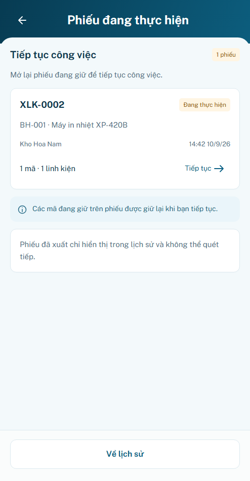
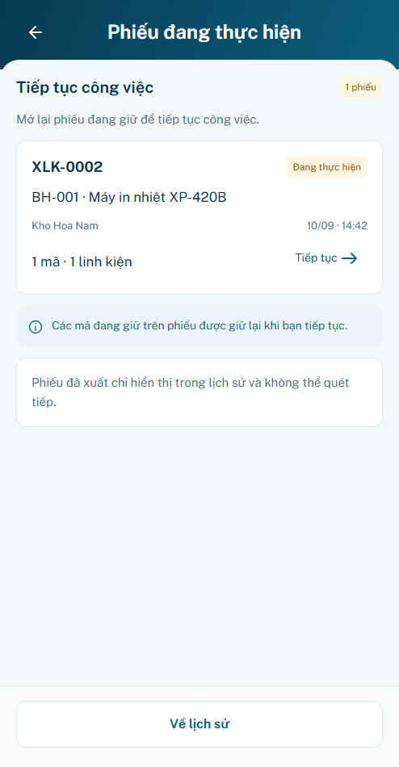
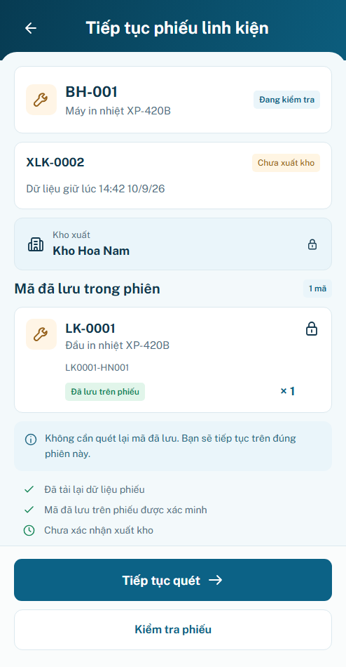
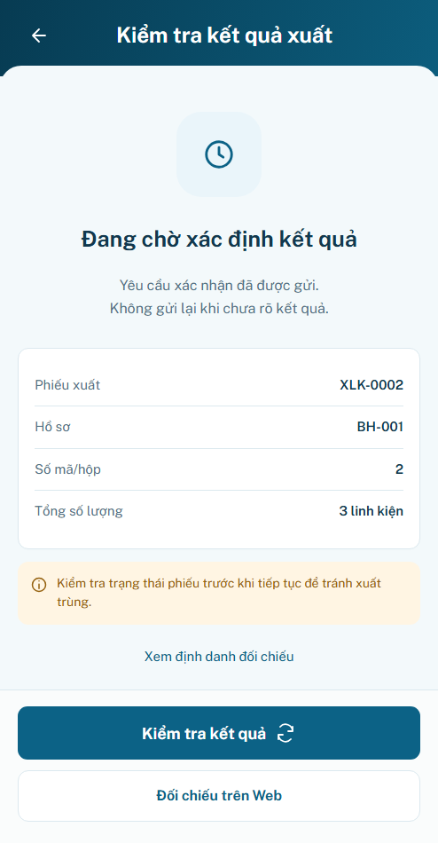

P21 r02 · ReviewP21 r02 · Sáu cải tiến UI/UX
Chờ review hình thức · Hành vi đạt trong preview
Chạm cả thẻ; gom thông tin phiếu/hồ sơ; trạng thái sẵn sàng sát CTA; hành động đúng nguyên nhân; sao chép thông tin đối chiếu; đánh dấu đúng phiếu vừa tiếp tục/xác minh.
Đăng nhập minhanh / preview → Bắt đầu ca. Bộ mô phỏng P21 ngoài khung app. Preview mất phiếu khi reload/logout; backend/thiết bị thật chưa xác minh.159test logic,24nhóm browser,20tổ hợp bố cục và4viewportfooter đạt.
P21.S01 · Phiếu đang thực hiện
Trước · r01
Sau · r02
P21.S02 · Tiếp tục đúng phiếu
Trước · r01
Sau · r02
P21.S03 · Cần đối chiếu trên Web
Trước · r01 Sau · r02
Sau · r02
P21.S04 · Kiểm tra kết quả xuất
Trước · r01
Sau · r02
Các nhánh tương tác
Ảnh trước–sau cùng494×950CSSpx/DPR1/fixtureB21. Đây là bản nâng cấp theo đề xuất đã được phép triển khai, chưa tự coi là nghiệm thu của Designer/user.